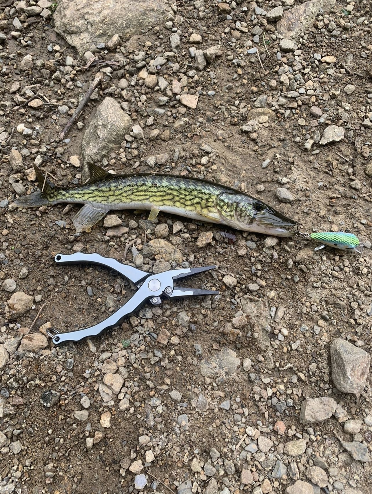

A fairly well known spot located in Warwick NY, Cascade Lake is a great fishing opportunity. While I usually prefer to fish small rivers and larger streams due to my lack of a boat, Cascade Lake is excellent because it is a town owned park, and you are able to hike the entire shoreline. The biggest reason I prefer rivers and streams is it is easy to wade in the shallows and fish lots of water that would otherwise be off limits. I hate it when I can see an awesome spot that I know there's fish but I just can't get there. While this happens with a lot of lakes it's not something you need to worry about at Cascade Lake.
Cascade Lake is tucked away out of sight and not near any major roadways, this helps the water remain less pressured than other bodies of water that people can see when they drive by. While Cascade Lake might not be easily seen and tucked away, it's still fairly pressured and not always easy to catch fish. When you arrive at the parking lot you can head to the left or the right, the left will bring you to a damn, the right will bring you to a small pier, then into a thin shallow portion of the lake. If you go in the summer I highly recommend bug spray. The bugs arn’t so bad by the damn but on the other side of the lake they are crazy.
Upon arrival you may notice the lake seems rather small, but do not let it deceive you, almost every fish I've caught here has been decent, very few dinks. I believe that has to do with 2 things, number 1 I tend to fish rather large lures here and number 2 I believe most fisherman here preform catch and release, maybe the fish just grow like crazy here.
When I fished Cascade Lake often, I went early in the morning, I would catch the sunrise before work, and getting a line in the water. I much prefer fishing the side of the lake that has the damn, I would walk out to the middle of the lake on the damn and with a few steps in either direction I could fish either shoreline and reel out to deeper water. Or more often I would just cast out to the middle of the lake with a bait to fish deeper water, we will cover the baits in a little bit. One of the biggest largemouth bass I have ever caught came out of this little lake. Although I peruse more Smallies so my largest largemouth being 5 lbs., I caught 3 large mouths over 4lbs fishing the middle of the lake off the damn. I also caught numerous pickerel, most were nothing to write home about, but there was 1 weighing about 3 lbs. and another large one that was 2lbs.
My absolute favorite lure to throw here was a large white Gogan squad spinner with a white craw trailer. Id throw it out and alternate between slow rolling it deep and occasionally running it across the surface. I caught 2 of the big largemouths on this setup. When running the spinner or other large lures I was using a Lews American hero combo with braid. The reason I ran braid was because I broke off to a fish that felt really good. I assumed it was a pickerel so i got braid in the hopes of it not getting sliced as easy. Oh man i was very happy i had changed to braid when i caught a large pickerel that I guestimate to have been 2 ½ or 3 lbs. On my trusty old Daiwa Samuri I ran 8lb test and would use this rod to work my crank baits, mostly closer to the shoreline on slow mornings trying to get anything to bite. This set up landed me one large bass, a few smaller bass, and some impressive bluegills. My favorite color to throw was a silver shad square bill, again Gogan squad branded. I am not a huge fan of Gogan lures but the fish here sure are.
Thats the biggest downside to this lake, when it's slow it's slow. There were many mornings id fish for 3 hours and rummage my entire tackle box and catch nothing. I brought my little brother Coiln here twice and we didn't catch anything either time, or we fished for hours. The first time we threw everything we had but mostly cranks spinners and Senko's. The second time we got skunked was an absolute shocker, we brought live bait and didn't catch anything at all, not even a sunfish or bluegill. I had many many mornings on this lake that I got skunked, it was still always a really fun time and it's a beautiful little park. If its a really rough day fishing the walking trails around the park are nice to walk on and you can use this time to check out other spots on the lake, maybe you'll find a spot that you like even better. If you do decide to take a break from fishing just remember that you can't catch a fish without a line in the water, and there could be a big one waiting.
notes from aurthor and date written